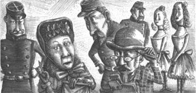
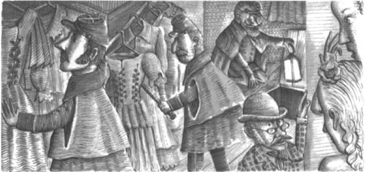

8

Christine mất tích!
Raoul là một chàng trai trẻ đau khổ. Anh đã đem lòng yêu. Anh không cần tôi giúp. Nhưng tôi - nhà tiên tri - hiểu những vấn đề của anh ấy.
Sáng hôm sau buổi dạ hội đeo mặt nạ, Raoul ăn sáng cùng người anh trai. Anh đã kể cho tôi nghe câu chuyện này vào ngày hôm sau.
'Tối nay mình sẽ nghe Carlotta hát', Philippe nói.
'Em muốn tới Nhà hát Opera', Raoul cho biết. 'Nhưng em không muốn nghe Carlotta. Em muốn nghe Christine.'
'Em thích Christine đến thế sao?', Philippe bộc bạch.
'Vâng ạ', Raoul nói. 'Em yêu cô ấy, Philippe ạ.'
Tối hôm đó, hai anh em đến Nhà hát Opera. Nhà hát Opera rất đông khán giả. Họ chờ đợi để nghe Carlotta. Một buổi biểu diễn vở Faust của Gounod sẽ diễn ra. Carlotta sẽ hát trong vở opera nổi tiếng này.
Nhưng Carlotta không hát vào tối hôm đó. Christine bước ra sân khấu. Lúc đầu, khán giả rất ồn ào. Mọi người hỏi nhau: 'Carlotta đâu?' Nhưng rồi Christine bắt đầu hát và khán giả im bặt. Họ chăm chú lắng nghe Christine.
Christine hát rất hay. Giọng cô ấy mạnh mẽ và ngọt ngào. Mọi người đều yêu thích giọng hát của cô ấy. Tất cả những người trong khán phòng đều vỗ tay và cổ vũ. Raoul nhìn thấy Christine đứng trên sân khấu. Anh nhìn thấy mái tóc vàng và đôi mắt xanh biếc tuyệt đẹp của cô. Anh nghe thấy giọng hát tuyệt vời của cô. Anh yêu cô!
Không lâu sau, Christine tiến về phía trước sân khấu. Cô nhìn thấy Raoul trong số khán giả. Cô hát cho anh ấy.
Thiên thần của thiên đường, thiên thần ánh sáng của tôi,
Hãy để chúng ta ở lại nơi này trong đêm tuyệt đẹp này.
Đột nhiên, một tiếng động lớn vang lên. Và cũng đột ngột, Nhà hát Opera tối đen. Sân khấu chìm vào bóng tối. Christine ngừng hát. Khán giả lớn tiếng la ó giận dữ.
Vài phút sau, lại có tiếng động nữa. Tiếp đó, sân khấu sáng trở lại. Nhưng Christine đã biến mất. Cô ấy đã biến mất!
Những người trong khán phòng đứng dậy. Họ bắt đầu hét lên. Người quản lý dừng buổi biểu diễn. Chuyện gì đã xảy ra? Christine đâu rồi? Mọi người đều muốn nghe giọng hát của cô ấy. Nhưng không ai có thể tìm thấy nữ ca sĩ trẻ.
Khán giả bắt đầu ra về. Mọi người đều tức giận. Philippe và Raoul gặp người quản lý.
'Chuyện gì đã xảy ra vậy?', Philippe hỏi.
'Christine ở đâu?', Raoul hỏi.
'Tôi không biết', người quản lý trả lời. Ông ấy rất lo lắng. 'Christine đã mất tích. Cô ấy không có trong Nhà hát Opera. Tôi đã gọi cảnh sát.'
——
Raoul và Philippe về nhà. Sau đó, một vài cảnh sát đến Nhà hát Opera. Họ nói chuyện với người quản lý. Họ nói chuyện với người bán vé. Họ nói chuyện với các ca sĩ và vũ công. Nhưng họ không nói chuyện với tôi.

Cảnh sát hỏi rất nhiều câu. Họ đi qua tất cả các hành lang của Nhà hát Opera. Họ vào tất cả các phòng. Họ vào một số hầm rượu. Hai giờ trôi qua. Nhưng cảnh sát không tìm thấy Christine.

'Cô ấy đã bỏ trốn rồi', một ca sĩ nói.
'Cô ấy có một người bạn trai trẻ', một vũ công nói.
'Vâng, tên anh ta là Raoul', bà Richard kể. 'Anh
ấy sống ở Paris. Anh ấy ở cùng anh trai mình.'
'Đúng thế! Raoul đã bỏ trốn cùng Christine', một ca sĩ khác nói.
Raoul không bỏ trốn. Anh ở nhà cùng anh trai. Nhưng Christine thì không có ở đó. Và Raoul là một chàng trai trẻ rất đau khổ.
Mục lục
- Tiêu đề
- Nội dung
- Ghi chú về tác giả
- Ghi chú về câu chuyện này
- Các nhân vật trong câu chuyện
- 1 Thiên thần của âm nhạc
- 2 Một bữa tiệc tại nhà hát opera
- 3 Raoul đến nhà hát opera
- 4 Hộp số 5
- 5 Chiếc gương trong phòng thay đồ
- 6 Vũ hội đeo mặt nạ
- 7 Câu chuyện của người Ba Tư
- 8 Christine biến mất!
- 9 Bên dưới nhà hát opera
- 10 Hồ nước và cây cổ thụ
- 11 Bóng ma nhà hát opera
- Bản quyền